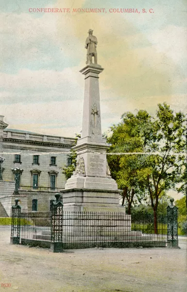
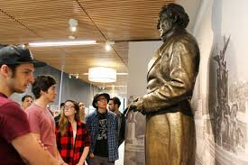

Case Study of a Monument
The South Carolina monument to the Confederate dead on the State House grounds has been intensely debated since it was unveiled in 1879, with the main conflict between viewing it as honoring Southern heritage and soldier sacrifice versus seeing it as a symbol of white supremacy. Initially erected by the women-led South Carolina Monument Association, it served as a celebration of white unity and Democratic governance after the war. The controversy intensified significantly after the 2015 Charleston church shooting by a white supremacist, which directly led to the removal of the Confederate flagpole by the monument, but not the monument itself.
Confederate monuments were built across the United States, including in states that were not part of the Confederacy. 20% of all able-bodied white men in the Confederacy died, so many families wanted to mourn the loss of their families and friends. Many Confederate monuments were erected within the first 20 years after the war. Many more monuments were put up as white supremacy in the South grew. Multiple monuments were looked at as signs of the South, and many people wanted to go back to slavery. Confederate monuments were used as a symbol of segregation. KKK groups would meet at monument sites. Many monuments were then taken down since they were seen as a symbol of segregation. Recently, after George Floyd’s death, there was more public outrage against racial oppression, and more monuments were taken down.
Should Confederate Monuments Stay Up?
I think monuments should stay up. The monuments were erected to remember the Confederate men and generals who served in the war. Those who deface the monuments by thinking it is about white supremacy are the problem. The people who look at it as a sign of supremacy only escalate the problem. Monuments are a symbol of the heritage of the South. Not everyone was pro-slavery; they were just fighting for their home. The US committed many atrocities against the people of Vietnam during the Vietnam War, but we still erect monuments. Does that mean Vietnam can take our monuments down? No. We memorialize those who fought in the war, not the things that happened. Confederate monuments are to memorialize those who fought, not slavery.
Create your own way to Remember the Confederacy
TEXT
Works Cited
https://www.atlantahistorycenter.com/learning-and-research/projects-initiatives/confederate-monument-interpretation-guide/historical-introduction-confederate-monuments/